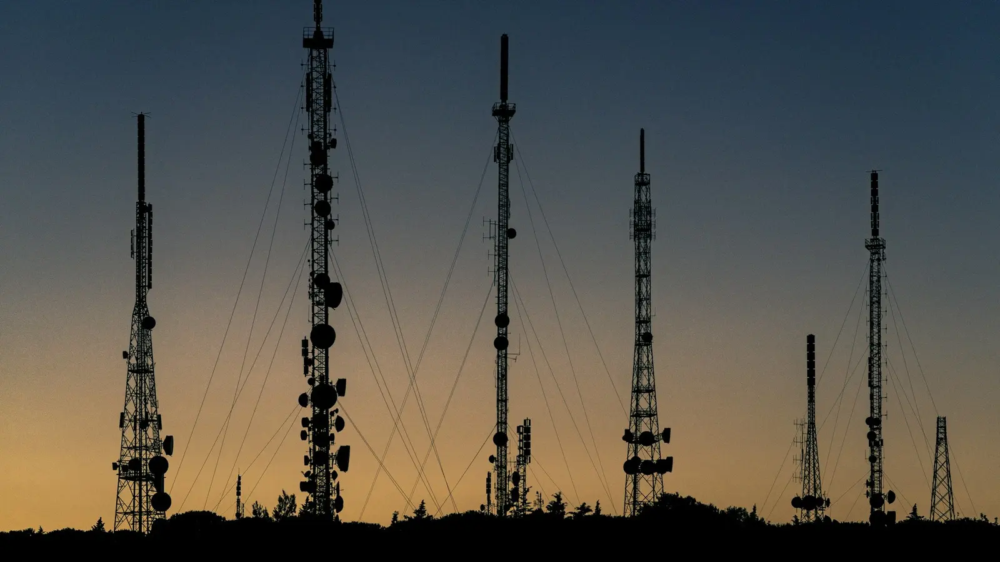
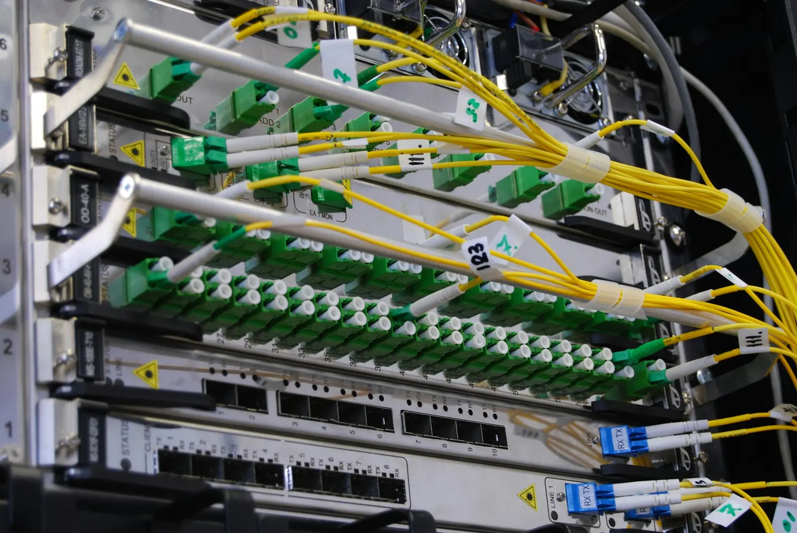
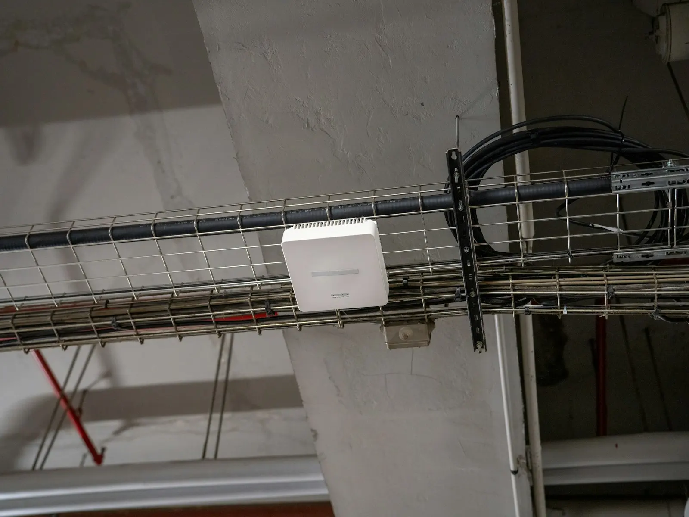

Internet di alamat pemasangan
Internet untuk rumah, toko, dan kantor yang dipasang teknisi kami langsung di alamat Anda. Satu pelanggan bisa punya beberapa alamat, dan tiap alamat punya nomor layanan serta status yang bisa dilihat di NMS.
Penyedia internet di Bireuen, Aceh. Kami memasang dan merawat sambungan di rumah, toko, dan kantor Anda.
PT Nirwana Akses Teknologi adalah penyedia internet yang berkantor di Jalan Medan–Banda Aceh Km 228, Peusangan. Teknisi kami memasang layanan di alamat Anda dan menanganinya bila terjadi gangguan, dari rumah, toko, sampai kantor.
Pemasangan dan perbaikan dikerjakan teknisi kami sendiri, bukan perantara. Setiap laporan bisa ditelusuri sampai ke petugas yang menanganinya, dan Anda tahu siapa yang datang ke alamat Anda.
Pelanggan, layanan, laporan gangguan, dan penugasan teknisi tercatat di satu sistem, Nirwana Management System. Petugas dan teknisi bekerja dari data yang sama, jadi Anda tidak perlu mengulang cerita.
Kantor kami di Jalan Medan–Banda Aceh Km 228 terbuka untuk pelanggan. Anda bisa bertanya lewat WhatsApp, telepon, atau datang langsung pada jam layanan.
Dari internet di rumah dan voucher hotspot sampai penanganan gangguan serta website untuk usaha Anda, semuanya dikerjakan dan dicatat oleh tim yang sama.
Internet untuk rumah, toko, dan kantor yang dipasang teknisi kami langsung di alamat Anda. Satu pelanggan bisa punya beberapa alamat, dan tiap alamat punya nomor layanan serta status yang bisa dilihat di NMS.
Akses Wi-Fi sementara lewat voucher, cocok untuk tamu, pengunjung, atau usaha yang butuh internet tanpa berlangganan tetap. Tersedia dalam beberapa jenis masa aktif.
Laporkan gangguan setelah masuk ke NMS, atau lewat WhatsApp bila Anda tidak bisa masuk. Petugas meninjau tiap laporan sebelum teknisi bergerak ke alamat Anda, dan Anda bisa memantau statusnya.
Website dan sistem informasi untuk usaha dan organisasi, dikerjakan tahap demi tahap dan diserahkan setelah diuji.
Kami memahami tujuan dan cara kerja usaha Anda lebih dulu, sebelum merancang apa pun.
Situs profil yang responsif, atau sistem untuk mencatat pesanan, pelanggan, dan laporan.
Alamat situs dan server diurus sekalian, lalu diuji sebelum diserahkan.
Pilih sesuai jumlah perangkat di rumah atau usaha Anda. Harga di bawah adalah contoh dan belum termasuk PPN.
20Mbps
Rp 175.000/bulan
4 dari 5 perangkat
Cocok untuk Anda
50Mbps
Rp 275.000/bulan
4 dari 10 perangkat
Paling dipilih
100Mbps
Rp 399.000/bulan
4 dari 20 perangkat
Biaya pemasangan dan syarat berlangganan mengikuti hasil survei di alamat Anda.
Kirim alamat dan kebutuhan Anda lewat WhatsApp. Petugas memeriksa apakah alamat itu bisa dilayani, lalu menjelaskan paket yang sesuai.

Teknisi datang memeriksa jalur kabel dan titik pemasangan di alamat Anda, lalu menyampaikan biaya dan jadwal yang pasti sebelum pekerjaan dimulai.

Kabel dan perangkat dipasang, lalu layanan Anda dicatat dengan nomor layanan dan alamat pemasangannya supaya mudah dilacak.
Layanan diaktifkan dan diuji bersama Anda. Statusnya bisa Anda lihat di NMS, dan gangguan bisa dilaporkan kapan saja.

Ketuk peta untuk menaruh pin di alamat Anda, atau pakai lokasi Anda. Kami tunjukkan kecamatan Anda dan apakah sudah terlayani. Petugas memastikan alamat tepatnya lewat WhatsApp.
Ketuk atau klik peta untuk menaruh pin. Di komputer, tahan Ctrl dan gulir untuk memperbesar.
Lokasi dihitung di peramban Anda dan tidak dikirim ke mana pun. Pesan WhatsApp hanya menyebut kecamatan.
Memuat peta…
Belum ada pin
Taruh pin di peta atau pakai lokasi Anda. Kecamatan dan status layanannya muncul di sini.
OpenFreeMap© OpenMapTiles© OpenStreetMap contributorsRelief: Mapzen / USGS
Kampus dan institusi yang sudah memakai layanan internet kami.
Masuk ke Nirwana Management System untuk melihat status layanan, melaporkan gangguan, dan memantau penanganannya. Bantuan masuk tersedia di halaman login.
Masuk ke NMSSebutkan nama dan kebutuhan Anda, lalu WhatsApp akan terbuka dengan pesan yang sudah terisi. Petugas kami membalas pada jam layanan.
Jam layanan
Senin–Sabtu, 08.00–17.00 WIB.
Jl. Medan–Banda Aceh, Keude Matang Glp Dua, Kec. Peusangan, Kab. Bireuen, Aceh 24261.Buka di Google MapsWhatsApp dan telepon
+62 831-7835-1557Senin–Sabtu, 08.00–17.00 WIB
Dibalas dalam satu hari kerja
Laporan gangguan
Masuk ke NMSLewat NMS, kapan saja